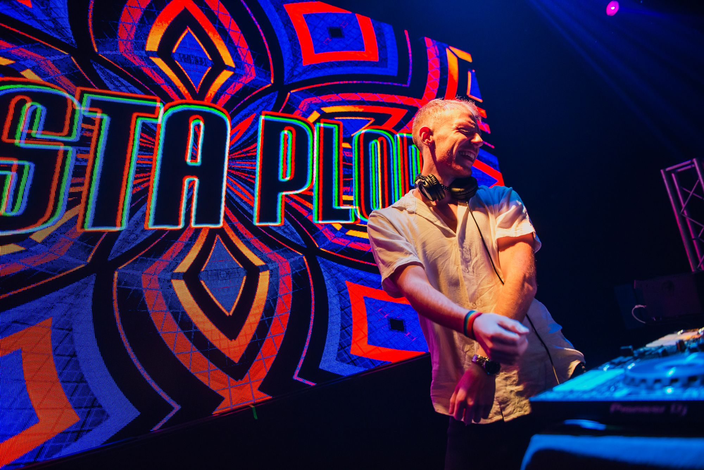
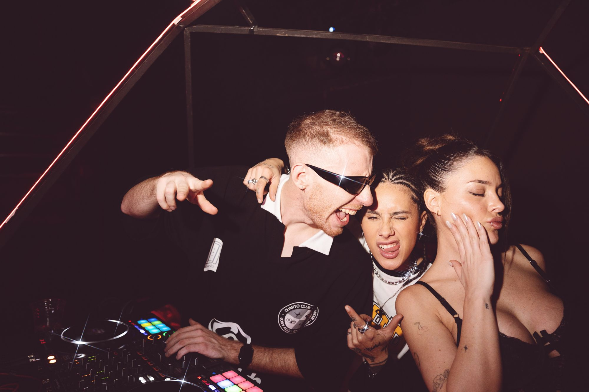

Para productores
Boliches
y festivales
- Open shows para artistas en vivo
- Residencias y fechas en boliches
- Festivales y fiestas de gran convocatoria
DJ — Open Format
Cachengue y pop para pistas grandes.
Mendoza, Argentina — tocando en AR, CL y UY.
Abrió para
Escenarios

Para productores

Para tu fiesta


Bio
DJ de Mendoza, Argentina. Cachengue mezclado con pop comercial, y una lectura de pista que funciona igual en un boliche lleno que en un casamiento.
Tocó en festivales como la Vendimia de la Ciudad de Mendoza y Rivadavia le canta al País, en Teatro Vorterix con Fiesta Plop! y Fiesta Puerca, y afuera en Sala del Museo (Montevideo), Hollywood (Viña del Mar) y LongBeach (Reñaca). Hoy es residente en Bardo en la Bodega, y pasó por Wabi Fun Club, Bosco Sunset, Black Jagger, Roble Wake Park, Chirolas, Fronteo y Grita Silencio, entre otros.
Contame fecha, lugar y tipo de evento, y te respondo con disponibilidad.
Escribime por WhatsApp bookingbytoms@gmail.com Instagram @tomasfortte